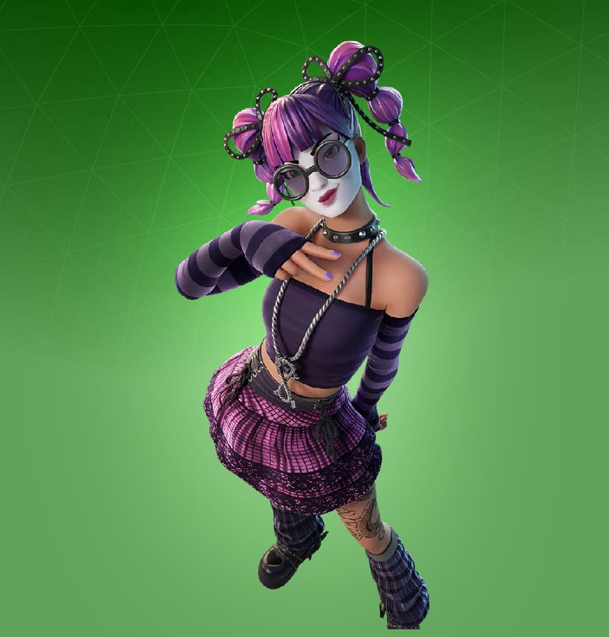
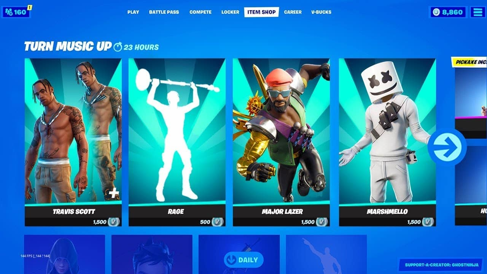

The Item Shop
What is the Item Shop?
The Fortnite Item Shop is a dynamic marketplace where players can purchase a variety of cosmetic items to customize their characters and enhance their gameplay experience. Featuring an ever-changing selection of skins, emotes, gliders, and more, the Item Shop offers something for everyone, whether you’re looking to stand out in battle or express your unique style.
Featured Items
The Item Shop showcases a rotating selection of featured items that refresh daily. This includes:
- Skins: Character outfits that allow players to express their individuality. From iconic characters to original designs, skins range from epic to legendary rarity.
- Back Bling: Accessories worn on the back of characters, adding a personal touch and completing your look. Each skin may come with a specific back bling or players can mix and match.
- Harvesting Tools: Unique pickaxes that players use to gather resources. Some tools offer special animations and effects, making resource gathering more fun.
- Emotes: Dance moves and gestures that allow players to communicate and celebrate in-game. Emotes range from silly dances to dramatic expressions, perfect for showcasing your personality.
- Gliders: These items let players descend onto the battlefield in style. Gliders come in various themes, and some even feature unique sound effects.
Daily and Featured Rotations
The Item Shop updates every day at 8 PM ET, offering new items and refreshing old ones. Featured items typically remain available for 24 hours, while daily items may last up to 48 hours. Be sure to check back frequently to grab limited-time items and exclusive bundles!
V-Bucks: The Currency of Fortnite
Purchases in the Item Shop are made using V-Bucks, Fortnite’s in-game currency. V-Bucks can be acquired through various means:
- Purchasing: Players can buy V-Bucks directly with real money through the platform's store.
- Battle Pass Rewards: Completing challenges in the Battle Pass can earn players V-Bucks as rewards.
- Free Battle Pass: Even without the paid version, players can earn V-Bucks through the free tier of the Battle Pass.
Exclusive and Rare Items
Occasionally, the Item Shop features exclusive skins and items that are available for a limited time. These rare items often become highly sought after by collectors, and players who miss out on them may never see them again. Keep an eye on special events, collaborations, and themed releases for unique items.
Tips for Shopping Smart
- Plan Your Purchases: Check the Item Shop daily to plan your V-Bucks spending. Prioritize items that resonate with your style.
- Follow Leaks and News: Stay updated on upcoming skins and items through Fortnite news outlets and community discussions.
- Budget Your V-Bucks: Avoid impulse buys! Set a budget for how much you want to spend each week or month.

Conclusion
The Fortnite Item Shop is an essential aspect of the game, offering players a chance to personalize their experience and showcase their style. With new items introduced regularly and exclusive offerings that capture the community's imagination, there’s always something exciting waiting in the shop. Dive in, explore, and find your perfect fit in Fortnite today!